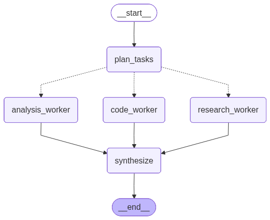

/orchestrate worksPart 2 of the LLM orchestration patterns series. Part 1 covered Adaptive Routing (query → router → one of three models). This one covers a genuinely different shape: fan-out to parallel specialists, then synthesize.
Part 1's Adaptive Routing pattern sends a query down exactly one branch — small, frontier, or specialist — and returns that branch's answer directly. It's cheap and simple, but it can't combine perspectives: a query that genuinely needs both research and code reasoning has to pick one.
This pattern is different. The reference diagram shows Orchestrator-Workers:
Orchestrator → { Research | Code | Analysis } → Synthesise → output"Best for: Deep research, multi-step projects"
A lead LLM decomposes the incoming question and dispatches it to whichever of three specialist workers are actually relevant — not always all three — each running independently. A synthesis step then merges their outputs into one coherent answer. This was added as a new POST /orchestrate endpoint alongside the existing /query routing endpoint from Part 1, reusing the same OpenAILLM wrapper and FastAPI plumbing.

Rendered directly from the compiled graph via .get_graph().draw_mermaid_png() — not hand-drawn. Dotted edges are the conditional dispatch; only the workers the plan selects actually run.
Orchestrator: an LLM call with structured output (OrchestrationPlan) that decides which of three workers are relevant to the query and writes a tailored instruction for each one it selects. Unlike Part 1's router, this isn't a single choice among three — any subset (1, 2, or 3) can be selected.
Workers (one node per branch, all appending to a shared worker_results list):
research_worker — gathers and synthesizes background information, context, and prior artcode_worker — reasons about implementation approaches, architecture, and technical feasibilityanalysis_worker — evaluates tradeoffs, risk, and structured comparisonsGraph wiring (OrchestratorGraphBuilder.build_graph):
START → plan_tasks →(conditional list of destinations)→ { research_worker | code_worker | analysis_worker }* → synthesize → ENDThe conditional edge returns a list of node names rather than a single choice, so LangGraph fans out to only the selected workers in the same superstep — genuine wall-clock parallelism on its own thread pool, no async rewrite required. synthesize fires exactly once regardless of whether 1, 2, or 3 workers were dispatched.
LLM CALL — Plan: plan_tasks classifies the query into a per-worker instruction plan.GRAPH — Route: route_to_workers reads the plan and returns only the relevant node names.LLM CALLS · PARALLEL — Dispatch: selected workers run concurrently, each with its own persona prompt.{worker, instruction, output} to worker_results, reducer-merged via operator.add so parallel writes don't clobber each other.synthesize waits for whichever branches actually ran, not a fixed count of three.LLM CALL — Synthesize: worker outputs are merged into one final answer.Cost per request: 1 planning call + N worker calls (N = 1–3, run in parallel) + 1 synthesis call — 2 to 5 LLM calls total, depending on the plan.
state/orchestrator_state.py (new) — OrchestratorState TypedDict: query, plan, context and worker_results (both Annotated[List[dict], operator.add] so parallel writes merge), answer.
prompts/orchestrator_prompts.py (new) — orchestrator decomposition prompt, one persona prompt per worker, and a synthesis prompt, following the existing ChatPromptTemplate.from_messages style from Part 1's prompts/prompt.py.
nodes/orchestrator_nodes.py (new) — OrchestrationPlan (Pydantic, optional per-worker instruction fields), plan_tasks, route_to_workers, the three worker nodes (thin wrappers over a shared _run_worker helper), synthesize.
graph/orchestrator_graph_builder.py (new) — OrchestratorGraphBuilder, structurally parallel to Part 1's GraphBuilder but with dynamic fan-out/fan-in instead of single-branch routing.
models/models.py (appended) — WorkerResult and OrchestrationResponse. Reuses the existing QueryRequest for the request body.
server.py (appended) — new POST /orchestrate route, same asyncio.to_thread shape as the existing /query handler.
| Question | Expected dispatch |
|---|---|
| "We are considering moving our monolith to microservices. What should we know, how would we approach the migration, and is it worth the risk?" | all three workers |
| "Write a Python function that deduplicates a list while preserving order." | code only |
| "What year was Python 3 released?" | research only |
| "SQL vs NoSQL for a high-write logging system — what are the tradeoffs?" | analysis-heavy, usually skips code |
curl -s -X POST localhost:8000/orchestrate \
-H 'Content-Type: application/json' \
-d '{"question": "..."}'The response includes plan and workers_used so you can see exactly which workers the LLM chose and why — worth running the same question twice, since the choice isn't fully deterministic.
python server.py or uvicorn server:app --reload) and exercise /orchestrate with the questions above; confirm workers_used plausibly matches the question, and answer is a coherent merge rather than one worker's raw output./health and the existing /query endpoint from Part 1 still work unmodified — this was additive, not a rewrite.Both patterns so far have a fixed shape: Part 1 picks one of three branches, Part 2 fans out to a known set of three workers. Neither loops, and neither can course-correct mid-task based on what it just learned.
Part 3 will cover Autonomous (ReAct): an agent that reasons, acts, and observes in a loop until it decides the task is done, rather than following a graph laid out in advance.
Query → Thought → Action (tool call) → Observation → ...loop... → Final answer"Best for: open-ended tasks, tool use, and problems where the number of steps isn't known up front"
The interesting design questions for this one: how many iterations to allow before forcing a stop, how to expose real tools (the current codebase has none yet — no search, no code execution), and how to keep a running scratchpad of observations across loop iterations without it blowing up the context window.
Part 2 of the LLM orchestration patterns series · Part 1: Adaptive Routing · Part 3: Autonomous (ReAct) — coming next · diagram source: reference orchestrator-workers pattern image.